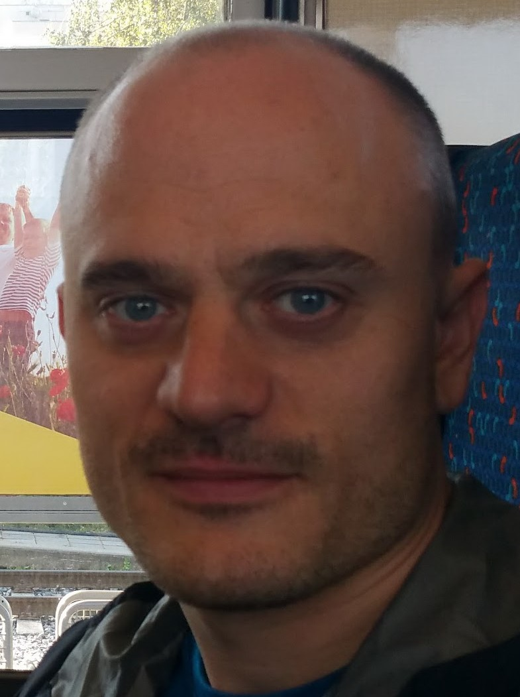

CVCS Verze |
CV_CZ.pdfIng. Miroslav ZelenýCV_EN.pdf |
|---|---|
|
Mobile phone Address Date of birth Education |

Vídeňská 263/50, Brno, 639 00 3. 11. 1983 University of Technology Brno, Faculty of Electrical Engineering, master degree |
| Work experience | |
|
Company Role From – To Key duties and responsibilities |
Garreett Motion Brno Validation engineer 1. 3. 2022 – 31.5.2022 -Analysis of the efficiency of a prototype of electric motor for electric vehicle |
|
Company Role From – To Key duties and responsibilities |
MycroftMind Brno Database specialist 1. 12. 2021 – 28.2.2022 -Mining data from database in GraphQL language |
|
Company Role From - To Key duties and responsibilities |
Nuclear Research Center, Řež, Czech Republic Hydrogen technology specialist 1. 11. 2020 – 1.10.2021 - Construction of an electric vehicle with hydrogen travel extender |
|
Company Role From-To Key duties and responsibilities |
ZF Engineering, Pilsen, Czech Republic Software Test Engineer – automated car transmission (external employee) 10. 10. 2016 – 31. 8. 2020 - Designing of software tests – test case sets- Manual testing of designed test cases by HIL simulator dSpace at the environment ETAS INCA |
|
Company Role From - To Key duties and responsibilities |
Continetal Automotive Czech Republic Ltd., Brandýs nad Labem Test Engineer of electronic control units for car fuel pumps 1. 7. 2015 – 30. 6. 2016
-Construction and commissioning of new electronical testing towers for electronical control units of automobile
fuel pumps based on electrical test specification |
|
Company Role From - To Key duties and responsibilities |
Siemens Electric Machines Ltd., Drásov, Czech Republic Commissioning Engineer of electric rotating machines 1. 7. 2015 – 30. 6. 2016 -Commissioning of new electric rotating machines (generators mainly), including adjusting of voltage regulators-Organising and leading of service trips abroad and implementation of necessary service actions -Communication with foreign service partners and customers, dealing with their request (quotations, orders processing, claims settlements, technical assistance) |
|
Company Role From - To Key duties and responsibilities |
Tedom Inc., Třebíč, Czech Republic Commissioning Engineer of CHP cogeneration units 1. 7. 2015 – 30. 6. 2016
-Service of CHP units (Combined Heat and Power units) with gas combustion engines (service of the electrical part as
well as service of the combustion engine and parts connected to the boiler room systems – gas, exhaust, water and
electrical power and signal route) |
| Education | |
|
Master study From - To Reached degree Key knowledge |
Faculty of Electrical Engineering and Communication, Brno University of Technology, Czech Republic Power Electrical Engineering study programme 2009 – 2012 Engineer Knowledge of production, transmission, distribution, use, quality and economy of electrical energy. Knowledge of renewable energy sources, lightning and heating technology, electrical machines, appliances and their protection. |
|
Bachelor study From - To Reached degree Key knowledge |
Faculty of Electrical Engineering and Communication, Brno University of Technology, Czech Republic Microelectronics and technology study programme 2004 – 2009 Bachelor Knowledge of analogue and digital circuits, their design and computer simulations, technology and design of integrated circuits and VHDL language. Knowledge of materials and manufacturing processes, design and production of printed circuit boards, surface mount technology, testing and measuring technology. Basic knowledge of information and communication technology. |
|
Grammar school Od-Do |
Gymnázium Matyáše Lercha, Brno, bilingual french section (tuition of subjects in French). 1997-2003 |
| Further education | |
|
Python academy From - To Reached degree Key knowledge |
Engeto – IT education instituttion 01/2022-05/2022 Certificate about gradutating and completing the projects – see github Introduction to programming |
|
Lifelong learning From - To Key knowledge |
Faculty of Information Technology, Czech Technical University in Prague 9/2015 – 02/2016 Administration of computer networks |
| Other skills and certificates | |
|
Languages |
English: pokročilý (B2-C1 dle SERR) French: velmi pokročilý (C2 dle SERR) German:začátečník (1 rok-2013/2014) Spannish:začátečník (1 rok-2011/2012) |
|
PC and IT skills |
Programming in Python language |
|
Professional skills |
Testing software on HIL simulators dSpace in the environment ETAS INCA Automated testing of hardware on simulators Agilent in the environment TestExec Agilent Serial communication protocols CAN, FlexRay, K-Line and software CANoe Electrical measuring and its automation, statistical analysis of measuring VHDL language programming in Xilinx ISE Administration of PC networks PCBs, SMT technology, integrated circuits, analog circuits, digital circuits Industrial automation – servomotors, trojcestné ventily, čerpadla, ventilátory, plynové ventily, senzory Electrical installations of all voltages, electrical switchboards, generator power outlet, electric machines and device protection Electric rotating machines – generators, motors, servomotors, voltage regulators CHP units (cogeneration units), Combustion engines Quality of electrical power and EMC (electromagnetic compatibility) |
|
Courses and certificates |
Driving licence A, B Electrotechnical qualification – from 3.5. 2022 to 3. 5. 2025 Python academy – course of programming in Python |